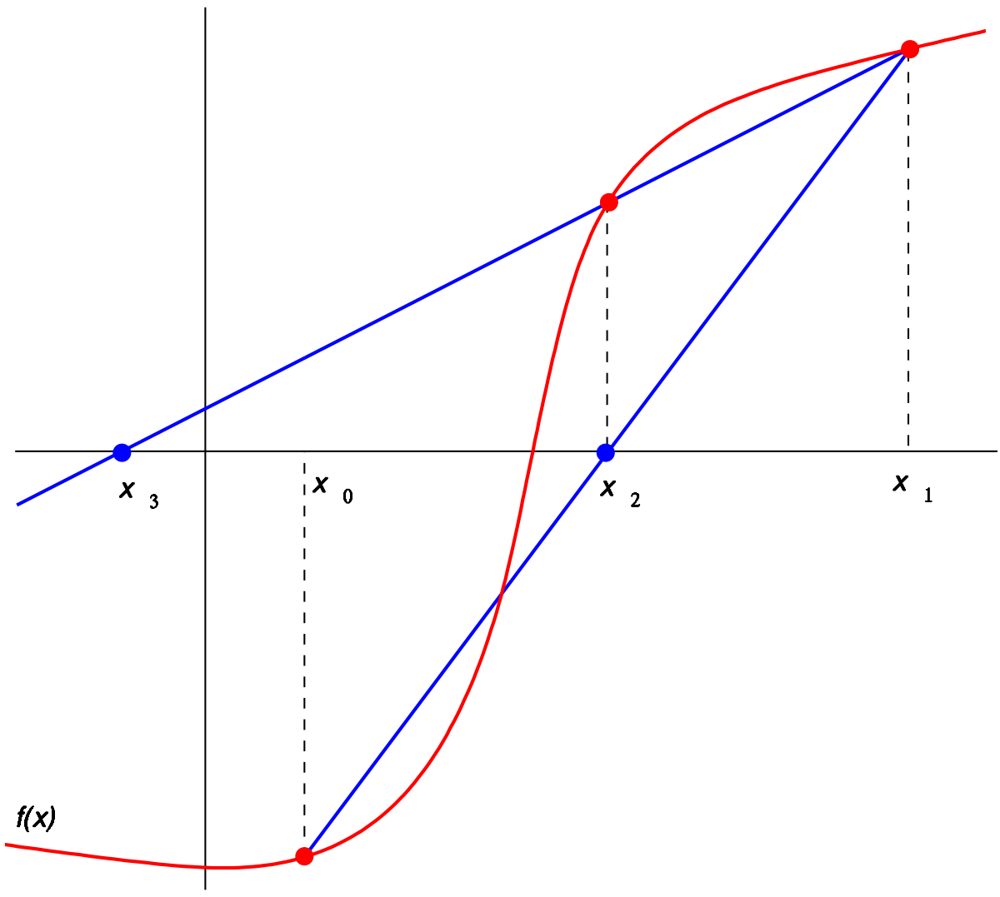

Secant Method¶
Overview¶
In numerical analysis, the secant method is a root-finding algorithm that uses a succession of roots of secant lines to better approximate a root of a function \(f\). The secant method can be thought of as a finite-difference approximation of Newton’s method. However, the method was developed independently of Newton’s method and predates it by over 3000 years.
{kind=link}
The Method¶
The secant method is defined by the recurrence relation
As can be seen from the recurrence relation, the secant method requires two initial values, \(x_0\) and \(x_1\), which should ideally be chosen to lie close to the root.
Derivation Of The Method¶
Starting with initial values \(x_0\) and \(x_1\), we construct a line through the points \((x0, f(x0))\) and \((x1, f(x1))\), as shown in the picture above. In slope–intercept form, the equation of this line is
The root of this linear function, that is the value of \(x\) such that \(y=0\) is
We then use this new value of \(x\) as \(x_2\) and repeat the process, using \(x_1\) and \(x_2\) instead of \(x_0\) and \(x_1\). We continue this process, solving for \(x_3\), \(x_4\), etc., until we reach a sufficiently high level of precision (a sufficiently small difference between \(x_n\) and \(x_n-1\)):
Usage¶
Imagine that we want to minimize the following function:
Then the code will look like this:
// example_root_secant.cpp
#include <iostream>
#include "../src/numerary.hpp" // Numerary library
using namespace std;
using namespace numerary;
/* Function to found the root */
double f(double x) {
return sin(x);
}
/* The main function */
int main() {
const double eps = 1.e-9; // eps value for method (1.e-9 by default)
double a = -1; // "a" value of segment [a, b]
double b = 1; // "b" value of segment [a, b]
double root;
short int is_found;
is_found = Numerary::root(f, a, b, &root, "secant", eps);
if (is_found == 1) {
cout << "Root is in x = " << root << endl;
} else {
cout << "Method not allowed!" << endl;
}
return 0;
}